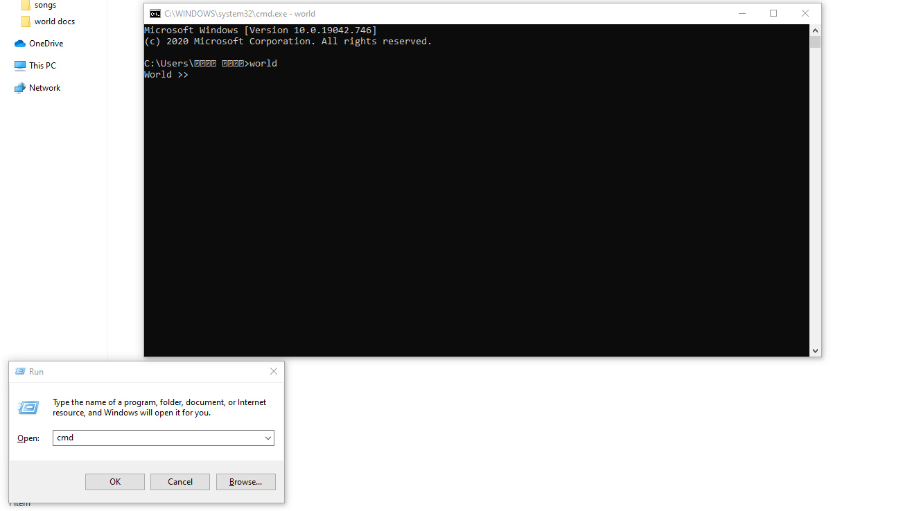

Basic commands
Commands :
-
world :
The "world" command enables you to log into the language and start writing code. -
setlang :
Configures the active keyword set for optimal execution speed. While WorldLang includes an embedded neural network to auto-detect source languages on the fly, explicitly setting your target language skips inference and speeds up processing time.Explicit Language Mode:
setlang -> ArabicKWAI Auto-Detection Mode:
setlang -> ""

Built-in Functions :
-
translate() :
A built-in function designed to facilitate the translation of code snippets and programming language keywords between different supported languages.Function Usage:
translate("factorial.world", "English", "Chinese")